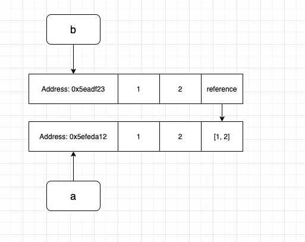

References and Copies in Python#
This notebook explains references vs copies in Python in a way that does not require prior knowledge of memory internals.
The most important rule#
In Python, variables do not store the object itself. They store a reference (a label/address) to an object.
Referencing#
Consider the following case:
a = [1, 2, 3]
Here:
[1, 2, 3]is the objectais the label that tells Python where the object lives
Assignment Shares References#
Lets see the following assignment:
b = a
You do not make a new copy of the list.
Instead:
a and b now point to the same list object.
So:
b[2] = 11
print("list a:", a)
print("list b:", b)
list a: [1, 2, 11]
list b: [1, 2, 11]
Both variables show the same updated list because they both reference the same object.
We created a new variable b and assigned the value of list a to it, after modifying the value in list b, what would be the result of list a and b?
Consider a second case:
a = [1, 2, 3]
def func(input_list):
input_list[2] = 11
return input_list
b = func(a)
print("list a:", a)
print("list b:", b)
list a: [1, 2, 11]
list b: [1, 2, 11]
In this example, list a is passed in as an input to our function, and we modified the input inside the function, what would happen to a ?
In both the examples above, you may have guessed, the result of a would be modified un-intentionally.
This is because in both the scenarios above, the new variable that we created actually binds to the same memory address of a, which means although it seems that we created a new variable b, it does not take actual memory space and the new variable was a reference to list a.
An illustrative diagram would be this:

The variable b in the first example and input_list in the second are both pointing to the same address of the variable a , so changing the element would be directly modifying the values in the specific memory address which leads to the changes in a as well.
You can verify the point by printing the memory address of the variables:
a = [1, 2, 3]
b = a
print("Address of a is: ", id(a))
print("Address of b is: ", id(b))
Address of a is: 4428377600
Address of b is: 4428377600
So how to address the problem?
Shallow Copy#
One way is to use the copy module in python.
import copy
a = [1, 2, 3]
b = copy.copy(a)
print("list a:", a)
print("list b:", b)
print("Address of a is:", id(a))
print("Address of b is:", id(b))
list a: [1, 2, 3]
list b: [1, 2, 3]
Address of a is: 4428371072
Address of b is: 4428379968
The copy function makes a shallow copy of the original object which separates the original variable a from the new variable b. The line
b = copy.copy(a)
is basically saying please give me 12 bytes(consider an int takes 4 bytes) of memory and copy the value of a to the new memory address allocated.

import copy
a = [1, 2, 3]
b = copy.copy(a)
b[2] = 11
print("list a:", a)
print("list b:", b)
print("Address of a is:", id(a))
print("Address of b is:", id(b))
list a: [1, 2, 3]
list b: [1, 2, 11]
Address of a is: 4428371520
Address of b is: 4428378688
But there are problems with shallow copy, see the below example,
import copy
a = [1, 2, [1, 2]]
b = copy.copy(a)
b[2][0] = 11
print("list a:", a)
print("list b:", b)
list a: [1, 2, [11, 2]]
list b: [1, 2, [11, 2]]
In this scenario, modifying b changes the element in a again, what happened?
The problem with shallow copy is it does not copy a nested object, in this case, it is [1, 2] which is nested in the original list.

Just like the name shallow copy, it only copies the surface instead of delving deep into the recursion, here the third element of b reference back to the original list instead of making a copy. You can verify by printing the memory address of the element.
print("Address of a[2]:", id(a[2]))
print("Address of b[2]:", id(b[2]))
Address of a[2]: 4428378624
Address of b[2]: 4428378624
How to resolve the issue?
Deep Copy#
A deep copy would go recursively copying an object. Replace the copy with deep copy, you would get:
import copy
a = [1, 2, [1, 2]]
b = copy.deepcopy(a)
b[2][0] = 11
print("list a:", a)
print("list b:", b)
print("address of a[2]:", id(a[2]))
print("address of b[2]:", id(b[2]))
list a: [1, 2, [1, 2]]
list b: [1, 2, [11, 2]]
address of a[2]: 4428381248
address of b[2]: 4428381440
Here changes made on b would not affect the original variable and the address of a and b would be completely different.
Reference vs Copy#
Reference: two variables can point to the same object.
Copy: you create a new object with the same (or similar) content.
Python will not copy automatically on assignment. You must copy explicitly.
Shallow copy: copies only the outer container; nested objects can remain shared.
Deep copy: recursively copies nested objects so nothing is shared.
Shallow copy example#
import copy
original = [1, 2, [3, 4]]
shallow = copy.copy(original)
original[2].append(5)
print('original =', original)
print('shallow =', shallow)
print('outer shared? ', original is shallow)
print('inner shared? ', original[2] is shallow[2])
original = [1, 2, [3, 4, 5]]
shallow = [1, 2, [3, 4, 5]]
outer shared? False
inner shared? True
Explanation: shallow copy copied the outer list, but the inner list is still shared.
Deep copy example#
import copy
original = [1, 2, [3, 4]]
deep = copy.deepcopy(original)
original[2].append(5)
print('original =', original)
print('deep =', deep)
print('outer shared? ', original is deep)
print('inner shared? ', original[2] is deep[2])
original = [1, 2, [3, 4, 5]]
deep = [1, 2, [3, 4]]
outer shared? False
inner shared? False
Mutable vs Immutable#
Immutable: cannot be changed in place (e.g.,
int,str,tuple).Mutable: can be changed in place (e.g.,
list,dict,set, many class instances). You can modify them without creating a new object
Example of mutable:
a = [1, 2, 3]
b = a
b.append(4)
print(a) # [1, 2, 3, 4]
[1, 2, 3, 4]
immutable objects behave differently#
x = 10
y = x
y = y + 1
print('x =', x)
print('y =', y)
print('x is y:', x is y)
x = 10
y = 11
x is y: False
Notice: integers are immutable, so y = y + 1 creates a new object and rebinds y.
References inside classes#
Attributes are references too.
class Box:
def __init__(self, data):
self.data = data
box = Box([1, 2, 3])
external_ref = box.data
external_ref[0] = 999
print('box.data =', box.data)
print('external_ref =', external_ref)
print('same object? =', box.data is external_ref)
box.data = [999, 2, 3]
external_ref = [999, 2, 3]
same object? = True
Connection to optimizers#
In gradient descent, a parameter \(p\) is updated by:
\(p \leftarrow p - \eta g\)
Optimizers work because they receive references to parameter objects, not copies.
Tiny optimizer demo#
class ToyLayer:
def __init__(self, W, dW):
self.W = W
self.dW = dW
def params(self):
return [self.W]
def grads(self):
return [self.dW]
class ToySGD:
def __init__(self, lr=0.1):
self.lr = lr
def step(self, model):
for p, g in zip(model.params(), model.grads()):
p[0] = p[0] - self.lr * g[0]
layer = ToyLayer(W=[10, 20], dW=[1, 1])
opt = ToySGD(lr=0.1)
print('Before:', layer.W)
opt.step(layer)
print('After :', layer.W)
Before: [10, 20]
After : [9.9, 20]
Checklist#
Assume assignment shares references unless you explicitly copy.
Mutable objects can change in place (and other references will see it).
Use shallow copies for simple containers.
Use deep copies when nested objects must be independent.
Optimizers rely on references to update real parameters.